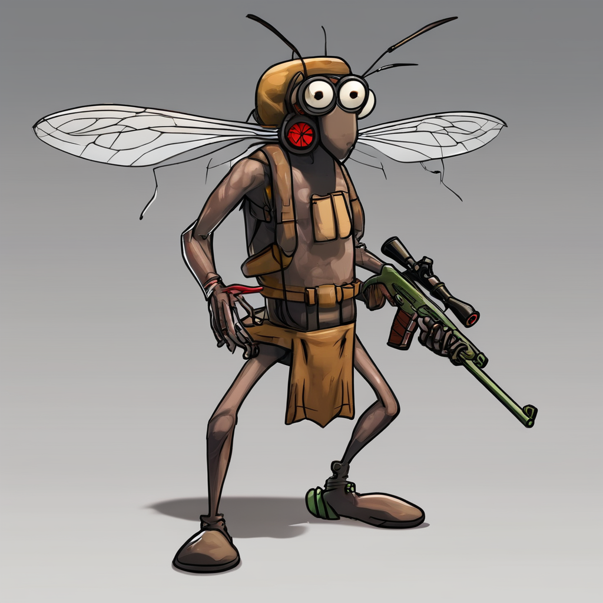

Registros Antigos:Os primeiros relatos da dengue remontam à China antiga, com evidênc
ias de uma doença semelhante à dengue encontrada em textos médicos chineses datados de 265 a.C.
Também há registros da doença no Egito Antigo e na Grécia.
Expansão Global:A dengue viajou ao longo dos séculos, espalhando-se através das rotas de comércio e migração.
Com o aumento das viagens internacionais e do comércio global, a disseminação da doença se acelerou.
Transmissão: O mosquito Aedes aegypti, que também transmite outras doenças como zika e chikungunya, é o principal vetor da dengue. Sua capacidade de se reproduzir em pequenas quantidades de água torna-o um desafio para o controle.
Prevenção: A prevenção é fundamental no combate à dengue. Isso inclui a eliminação de criadouros de mosquitos, como recipientes de água parada, e o uso de repelentes e mosquiteiros.
Vigilância Epidemiológica: A vigilância ativa é essencial para detectar surtos precocemente e implementar medidas de controle rapidamente. Isso envolve o monitoramento de casos suspeitos e ações de controle vetorial.
Engajamento Comunitário: Envolvimento da comunidade é crucial para o sucesso das estratégias de combate à dengue. Educação pública sobre a importância da prevenção e ação coletiva na eliminação de criadouros são fundamentais.
Pesquisa e Desenvolvimento: Investimentos contínuos em pesquisa para desenvolver vacinas eficazes e novas abordagens de controle são necessários para enfrentar os desafios em curso apresentados pela dengue.
Imagem sobre a dengue mostrando um mosquito armado